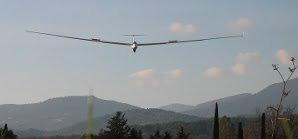
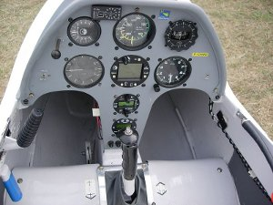

Un planeur, comment ça vole ?
Le Planeur
Un planeur est un aéronef, plus lourd que l’air (un monoplace pèse environ 350Kg avec son pilote), qui
ressemble à un avion, mais avec des ailes allongées et des formes plus effilées. Dépourvu de moteur,
d’énergie pour se sustenter, un planeur descend lentement dans l’air qui l’entoure. Pour monter, le planeur
devra « simplement » se tenir dans un volume d’air qui monte : une ascendance.
Les ascendances. C’est le nom donné aux volumes d’air qui s’élèvent. Le thermique est le plus classique :
l’air à proximité du sol chauffé par le soleil, se dilate et devient plus léger. Il s’élève en une colonne
généralement surmontée d’un joli nuage : le cumulus. Les planeurs spiralent souvent sous ces cumulus,
s’élevant avec la colonne d’air chaud.
Piloter un planeur
Pour contrôler le vol d’un planeur, il y a 3 commandes principales, comme dans un avion. Une sur le manche d’avant en arrière pour contrôler la vitesse, une deuxième aussi sur le manche de gauche à droite pour contrôler l’inclinaison. La troisième commande est la direction, actionnée avec les pieds, qui agit sur le gouvernail de direction.
On peut être élève pilote dès l’age de 15 ans et pilote breveté à 16 ans, et effectuer alors des vols seul à bord à proximité de l’aérodrome. Le brevet de pilote de planeur est une première étape qui sanctionne la capacité du pilote à conduire ses trajectoires, gérer sa sécurité et de bonnes bases dans la recherche et l’exploitation des ascendances.
Après le brevet la progression vers des planeurs de grande performance et des grands vols se poursuit. Les vols de plusieurs heures et de plusieurs centaines de kilomètres sont possibles.